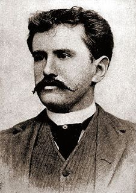

The Last Leaf The Last Leaf
CONTENTS
| S. No. | Content |
|---|---|
| 1. | Introduction |
| 2. | Character Analysis |
| 3. | Plot Overview |
| 4. | Key Moments |
| 5. | Conclusion |
About Writer

William Sydney Porter, better known by his pen name O. Henry, was an American writer known primarily for his short stories,
Born:William Sidney Porter, September 11, 1862, Greensboro, North Carolina, C.S.
Died:June 5, 1910, New York City, U.S.
Resting place:
Riverside Cemetery, Asheville, NC
“The Last Leaf” ends with one of O. Henry’s famous surprise endings: the “last leaf” is in fact a painting by Behrman. This seems to confirm what Sue and Behrman believed all along: that it wasn’t the survival of the leaf that mattered, but the rekindling of Johnsy’s hope. In a further twist, it is not Johnsy who dies, but Behrman. Despite the loneliness of Behrman’s death, his sacrifice was not in vain. For, by referring to this selfless act of sacrifice as Behrman’s “masterpiece,” Sue is referring both to the quality of the painting—which is extraordinarily realistic—and to the love and generosity of the act itself, which had given Johnsy the will to live.
Thank You